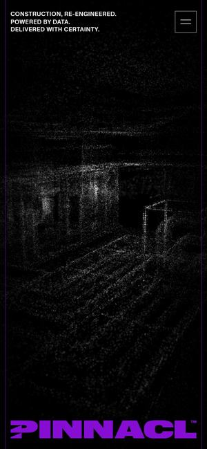
Awwwards 우수작 · 2026.09먼저 보세요01Pinnacl
와 포인트공개할 수 없는 건물을 사진 대신 레이저로 스캔한 점과 선(공간 데이터)으로 보여줍니다. 그 위로 보라색 큰 로고와 ‘데이터로 다시 설계한 건설’이라는 문구가 올라옵니다.
더원파트너스라면BUILDGO 첫 화면을 시공 사진이 아니라 ‘선으로 그린 건물’로. 진한 파랑 바탕에 주황 선이면 보내주신 색 그대로 기술 회사의 인상이 납니다.
더원파트너스 · BUILDGO 신규 홈페이지 레퍼런스 보드
보내주신 BUILDGO 그림과 네 가지 요청(설계~시공 기술 판매 · 회원전용 자재몰 · 등급별 가격 · 포인트 적립)에 맞춰 고른 레퍼런스 31곳. 카드의 영상은 실제 사이트 첫 화면을 녹화한 것입니다.
추천 조합부터 보기이름(BUILDGO), 색(진한 파랑 + 주황), 그리고 네 가지 사업. 보내주신 그림에 뼈대는 이미 있습니다. 새로 만드는 사이트라 처음부터 ‘와’ 수준으로 시작할 수 있습니다.


해외 건설·시공 회사 가운데 2026년 웹 어워드 수상작. 공통점은 하나 — 사진 나열 대신 ‘우리가 어떻게 짓는지’를 첫 화면에서 보여줍니다.

Awwwards 우수작 · 2026.09먼저 보세요01와 포인트공개할 수 없는 건물을 사진 대신 레이저로 스캔한 점과 선(공간 데이터)으로 보여줍니다. 그 위로 보라색 큰 로고와 ‘데이터로 다시 설계한 건설’이라는 문구가 올라옵니다.
더원파트너스라면BUILDGO 첫 화면을 시공 사진이 아니라 ‘선으로 그린 건물’로. 진한 파랑 바탕에 주황 선이면 보내주신 색 그대로 기술 회사의 인상이 납니다.
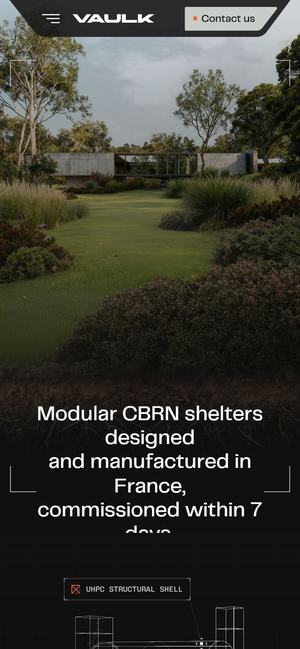
Awwwards 오늘의 사이트 · 2026.05먼저 보세요02와 포인트풀숲 속 완성된 건물 영상 위에 ‘프랑스에서 설계·제작, 7일 안에 가동’ 한 줄. 스크롤하면 같은 건물이 주황 선으로 그린 3D 뼈대로 바뀝니다.
더원파트너스라면완성 사진에서 주황 선 도면으로 넘어가며 ‘설계부터 시공까지’를 보여주고, ‘착공부터 준공까지’ 약속 한 줄을 첫 화면에. 숫자는 실제 실적으로만 씁니다.
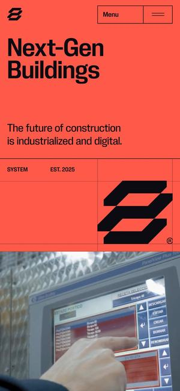
Awwwards 오늘의 사이트 · 2026.0503와 포인트화면 가득한 주황 바탕에 ‘Next-Gen Buildings’와 로고가 뜨고, 스크롤하면 공장 영상과 빨간 선 도면이 이어지며 설계·엔지니어링·생산을 하나로 잇는 과정을 단계별로 설명합니다.
더원파트너스라면BUILDGO의 주황을 첫 화면 바탕색으로 과감하게. 메인 상품인 ‘설계 → 시공 기술’을 단계별 카드로 파는 구조를 그대로 가져옵니다.
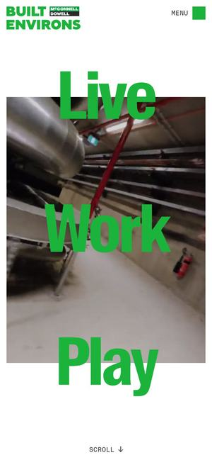
Awwwards 우수작 · 2026.0904와 포인트현장 작업자 영상 위로 ‘Live · Work · Play’ 큰 초록 글자가 흐르고, 실제로 지은 경기장을 선으로 그린 도면과 3D 모형으로 보여줍니다.
더원파트너스라면‘우리가 지은 곳’을 도면과 사진으로 나란히. 시공 분야 아이콘 6개를 실제 실적 도면으로 바꾸는 참고입니다.
 Awwwards 우수작 · 2026.0605
Awwwards 우수작 · 2026.0605와 포인트진한 파랑 바탕에 화면을 꽉 채운 ‘Haven’ 글자로 시작해, 스크롤하면 시공한 집 사진이 깊이감 있게 움직이며 사례로 이어집니다.
더원파트너스라면보내주신 로열블루와 가장 가까운 색. ‘BUILDGO’ 글자를 화면 가득 크게 쓰고 그 아래로 시공 사례가 올라오는 첫 화면.
더원파트너스의 메인은 ‘설계부터 시공까지’. 이 말을 글로 쓰는 대신 화면이 직접 보여주는 수상작들입니다.
 Awwwards 오늘의 사이트 · 2026.10먼저 보세요06
Awwwards 오늘의 사이트 · 2026.10먼저 보세요06와 포인트들어가면 연필 선으로 건물 스케치가 그려지고, 그 선 위에 색이 입혀지며 나무에 둘러싸인 실제 건물로 바뀝니다. 그다음 큰 단지 이름이 올라옵니다.
더원파트너스라면BUILDGO 첫 화면 그대로 — 도면 선이 그려지고, 시공된 건물로 바뀌고, ‘설계부터 시공까지, 한 번에’ 문구. 메인 상품을 3초 만에 설명합니다.
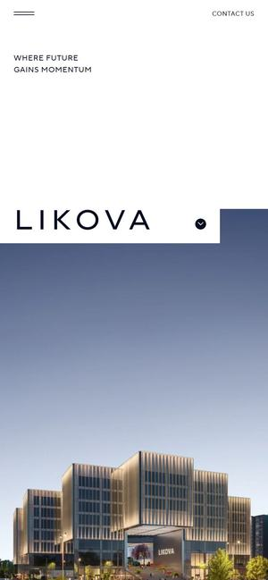
Awwwards 오늘의 사이트 · 2026.08먼저 보세요07와 포인트유리 조각이 모인 입체 로고가 열리면 해 질 녘 건물이 나타나고, 스크롤에 맞춰 건물 모양의 패널이 이어 붙으며 형태를 바꿉니다.
더원파트너스라면‘설계·시공·자재를 하나로’ — 세 조각이 하나로 맞춰지며 BUILDGO 로고가 되는 연출. 더원(THE ONE)이라는 이름 뜻과도 맞습니다.
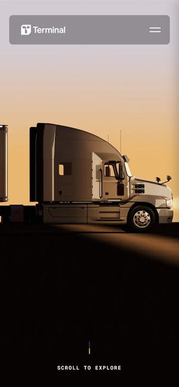
Awwwards 오늘의 사이트 · 2025.0908와 포인트노을 속 트럭 영상으로 시작해, 스크롤할 때마다 ‘AI 기술이 → 하나로 연결된 자동 시스템으로’처럼 문장이 장면과 함께 바뀌는 이야기형 페이지입니다.
더원파트너스라면‘견적 요청 → 설계 → 시공 → 준공’을 스크롤 한 번에 한 장면씩. 복잡한 기술 판매를 고객이 읽지 않고 따라오게 만듭니다.
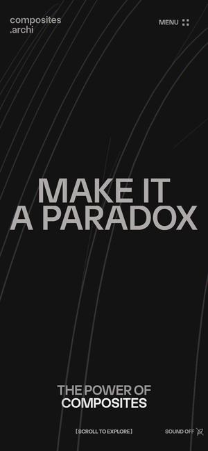
Awwwards 오늘의 사이트 · 2025.0409와 포인트검은 화면에 ‘MAKE IT A PARADOX’ 큰 글자가 뜨고, 스크롤하면 흰 곡선 구조물이 3D로 휘어 들어오며 소재 이야기를 이어갑니다.
더원파트너스라면회원전용 자재몰 입구를 ‘자재 창고’가 아니라 ‘기술 전시장’으로. 대표 자재 하나를 3D로 돌려 보여주는 첫 장면.
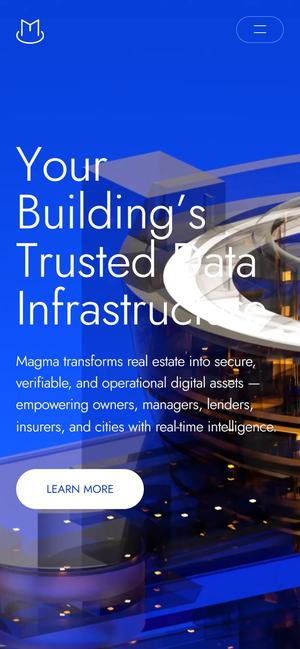
Awwwards 오늘의 사이트 · 2023.0510와 포인트로열블루 화면에서 숫자가 올라가며 로딩되고, 원형으로 쌓인 3D 건물이 떠오르며 ‘건물 데이터를 한 곳에’를 말합니다.
더원파트너스라면보내주신 로열블루와 거의 같은 파랑. ‘하나로 모은다’는 더원(THE ONE)의 뜻을 3D 건물 하나로 보여주는 참고입니다.
보내주신 그림의 ‘검색창 → 시공 분야 → 전문가 → 무료 견적’ 흐름을 가장 직관적으로 만든 해외 서비스들. 상은 없지만 이 흐름에서 기준이 되는 곳만 골랐습니다.
 먼저 보세요11
먼저 보세요11와 포인트왼쪽에 집 그림, 오른쪽에 ‘구조 고르기’. 방 개수와 외장을 고를 때마다 그림과 가격이 바로 바뀌고, 그 화면에서 견적 요청까지 이어집니다.
더원파트너스라면메인 상품 ‘설계~시공 기술’을 ‘평형·구조·마감을 고르면 예상 견적이 바로’ 화면으로. 무료 견적 버튼을 누르기 전에 고객이 이미 마음을 정합니다.
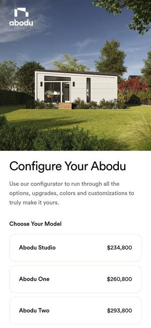
12와 포인트모델 목록 옆에 가격이 붙어 있고, 모델을 고른 뒤 외장·실내 옵션을 바꿀 때마다 가격이 그 자리에서 다시 계산됩니다.
더원파트너스라면회원 등급이 반영된 ‘내 가격’을 옵션 고르는 대로 바로 보여주는 견적 계산기. 자재몰과 시공 견적에 같이 씁니다.
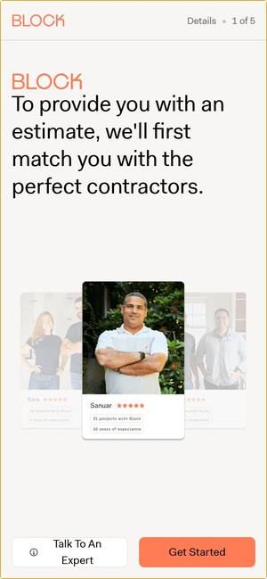
13와 포인트‘견적을 드리려면 먼저 딱 맞는 시공사부터 연결해 드릴게요’ 한 문장과 담당자 사진. 질문에 하나씩 답하면 지역 시공사 추천과 무료 상담 예약으로 이어집니다.
더원파트너스라면보내주신 ‘검증된 전문가에게 무료 견적’과 같은 구조. 한 화면에 질문 하나, 주황 ‘다음’ 버튼 하나만.
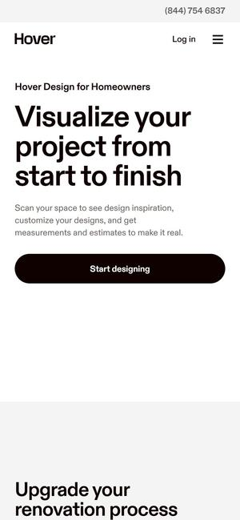
14와 포인트‘처음부터 끝까지 미리 보세요’ 문구 아래, 집 사진에 지붕·외벽·창호 자재를 바꿔 입혀 보는 화면을 보여줍니다.
더원파트너스라면시공 분야 아이콘을 누르면 ‘공사 후 모습’을 먼저 보여주는 화면. 외벽·창호·지붕 자재를 바꿔 보며 견적으로 넘어갑니다.
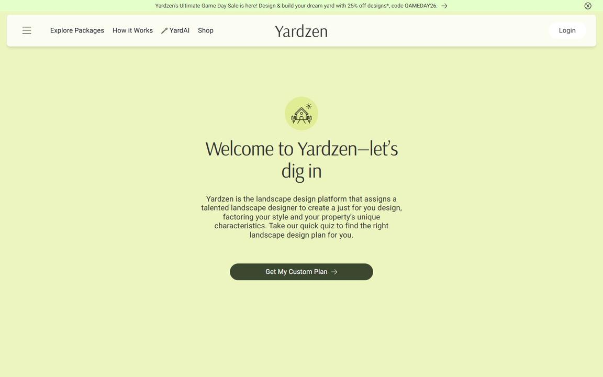
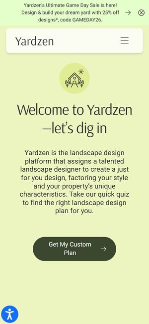
15와 포인트‘시작해 볼까요’ 한 화면으로 문을 열고, 취향 설문에 답하면 마당 설계안이 나오며 일부 지역은 시공업체까지 연결됩니다. (첫 화면만 정지 화면으로 담았습니다)
더원파트너스라면무슨 공사가 필요한지 아직 모르는 고객용. 사진을 고르는 설문으로 시공 분야와 예산을 좁힌 뒤 전문가에게 연결합니다.
회원전용 건설 자재 판매와 등급별 가격. 전문가·사업자만 가격을 보거나 주문하는 ‘트레이드’ 몰 중 화면이 세련된 곳들입니다.
 먼저 보세요16
먼저 보세요16와 포인트‘찾고, 받아 보고, 정한다(Search. Sample. Specify.)’ 세 단어와 샘플 상자 하나로 시작해, 수백 개 브랜드의 자재를 질감 사진 카드로 둘러봅니다. 가입한 전문가만 샘플을 주문합니다.
더원파트너스라면BUILDGO 회원전용 자재 도매몰의 기준. 누구나 구경은 하되, 사업자 회원으로 가입해야 도매가와 주문이 열리는 구조.

 Awwwards 우수작 · 2025.0617
Awwwards 우수작 · 2025.0617와 포인트잡지 같은 실내 사진 한 장으로 시작하는 목재몰. 길이를 넣어야 가격이 나오고, 현장마다 견적 목록을 따로 만들 수 있습니다. (첫 화면은 정지 화면)
더원파트너스라면자재 가격을 ‘수량·길이를 넣으면 내 등급 단가로 계산’. 현장별 견적 목록은 시공 회원에게 특히 쓸모가 큽니다.
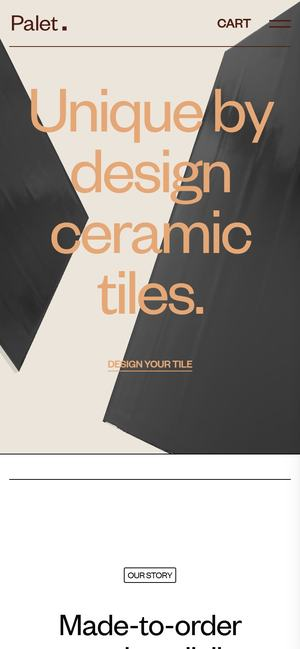
Awwwards 우수작 · 2024.0418 19
19와 포인트오렌지 소파가 놓인 시공 사진 위에 ‘TRADE’ 한 단어. 사업자 회원은 견적에서 일반가와 회원가를 둘 다 본다고 안내하고 바로 가입 양식으로 이어집니다.
더원파트너스라면BUILDGO 등급별 가격의 표시법. 상품마다 ‘정가 → 내 등급 가격’을 나란히 보여주면 가입할 이유가 한눈에 보입니다.
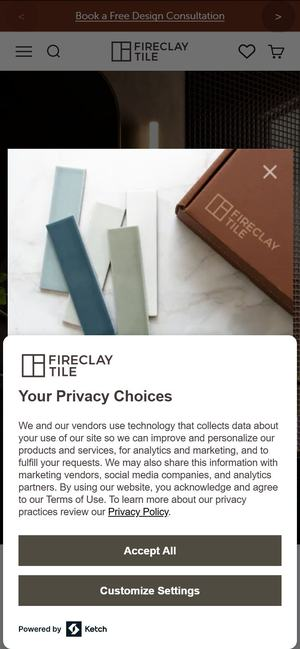
20와 포인트타일 시공 사진과 ‘Fireclay Trade Program’ 아래 혜택을 항목별로 정리합니다. 회원 등급에 따라 시안(렌더링)을 할인하거나 무료로 해준다고 안내합니다.
더원파트너스라면등급마다 가격만 다르게가 아니라 서비스도 다르게. 상위 등급에는 전담 상담·설계 검토를 얹는 설계입니다.
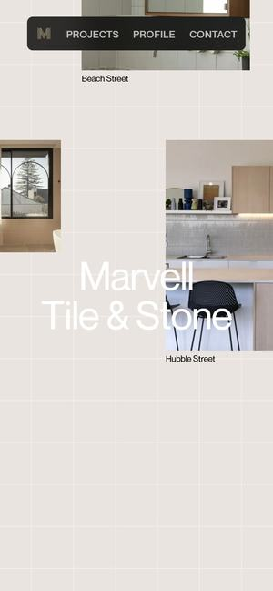
Awwwards 오늘의 사이트 · 2026.0521와 포인트‘Traditional Craftsmanship’ 문구가 지나가면 밝은 바탕 위로 시공 사진들이 떠다니듯 흩어지며 회사 이름이 드러납니다.
더원파트너스라면자재몰을 ‘쇼룸’처럼. 타일·석재 시공 사진은 크게 보여주고, 가격은 로그인한 회원에게만.
등급별 가격과 포인트 적립은 보여주는 방식이 가입을 좌우합니다. 참고로, 추천한 사람의 추천한 사람까지 여러 단계로 포인트를 나눠 주는 방식은 방문판매법의 다단계판매 등록 대상인지 먼저 확인이 필요합니다.
 22
22와 포인트‘무료 커피는 시작일 뿐’ 한 줄로 시작해 가입, 적립, 혜택을 단계 그림으로 설명하고, 등급별로 1달러당 쌓이는 별 개수를 따로 안내합니다.
더원파트너스라면BUILDGO 포인트 안내의 기준. ‘가입 → 구매 → 적립 → 자재 결제에 사용’ 단계 그림과 등급별 적립률 표 한 장.
 23
23와 포인트‘회원이라서 더 좋다’ 큰 문구와 운동 사진, 그 아래 회원 혜택을 짧은 카드로 묶고 자주 묻는 질문이 가입까지 이어집니다.
더원파트너스라면회원가입 화면에서 ‘회원이 되면 받는 것’(회원가·포인트·전담 상담)을 카드 3장으로. 가입 버튼은 그 바로 아래.
 24
24와 포인트‘최대 5% 적립’ 큰 숫자로 시작해, 적립되는 것과 안 되는 것(포인트로 결제한 금액 등)까지 한 페이지에 정리합니다.
더원파트너스라면포인트 규칙은 숫자 하나로 크게, 예외는 작게 분명히. 나중에 ‘왜 적립이 안 됐냐’는 문의를 줄입니다.
지디웹에서 2024~2026년에 상을 받은 국내 사이트 가운데 건설 기술·자재·인테리어·회원제 거래에 가까운 곳들입니다.
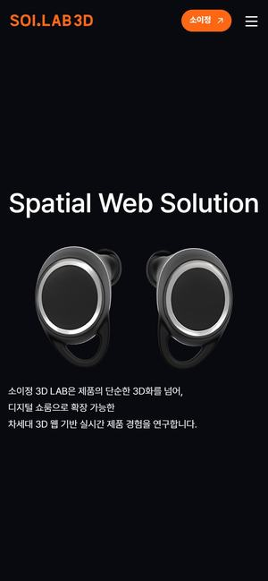
지디웹 GRAND PRIZE · 2025먼저 보세요25와 포인트검은 화면에 ‘Spatial Solution’ 큰 글자와 3D 제품이 떠 있고, 스크롤하면 제품이 돌아가며 나뉘고 ‘Detailed View’로 세부를 보여줍니다.
더원파트너스라면회원전용 자재몰의 상세 보기. 창호·패널 같은 자재를 화면에서 돌려 보고 마감재를 바꿔 보는 3D 상세.
 지디웹 WINNER PRIZE · 202626
지디웹 WINNER PRIZE · 202626와 포인트강판 코일을 정면에서 찍은 영상 위로 ‘포스코 DNA에 플랫폼을 더하다’, 이어서 회원제 거래 서비스를 카드 네 장으로 나눠 보여줍니다.
더원파트너스라면회원사 수·거래 실적을 숫자로 크게 보여주는 신뢰 영역. 자재 도매몰에 실제 실적이 쌓이면 그대로 씁니다.
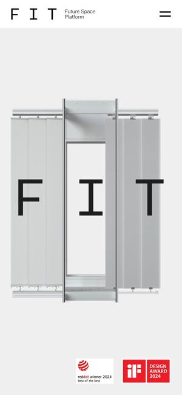
지디웹 WINNER PRIZE · 202427와 포인트세로 패널 위에 ‘F I T’ 세 글자가 크게 서고, 철골 기둥 3D와 함께 ‘공간의 무한한 가능성’으로 이어집니다. 건설 기술을 제품처럼 나눠 소개합니다.
더원파트너스라면메인 상품 ‘설계~시공 기술’을 제품처럼. ‘설계 / 시공 / 자재’ 패키지로 나눠 진열하는 구조.
와 포인트큼직한 기획전 사진과 동그란 분야 아이콘 줄, 시공 사례와 시공 상담, 그리고 위쪽 메뉴에 ‘사업자몰’이 따로 있습니다.
더원파트너스라면‘일반 방문자는 시공 상담, 회원은 자재 구매’로 입구를 나누는 배치. 보내주신 오른쪽 위 ‘회원전용 자재 도매몰’ 버튼의 실제 예.
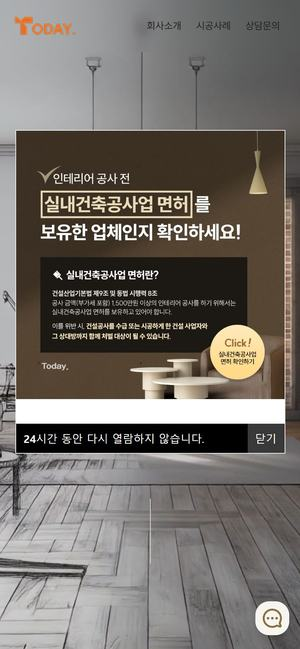
지디웹 WINNER PRIZE · 202629와 포인트흑백 스케치 같은 실내 사진이 한쪽부터 색이 입혀지며 완성된 집으로 바뀝니다. 어느 화면에서든 ‘간편 견적’과 ‘무료 견적’을 누를 수 있습니다.
더원파트너스라면국내에서 본 ‘설계 → 완성’ 연출의 가장 쉬운 예. 그리고 BUILDGO의 ‘무료 견적’ 버튼을 화면 어디서나 따라다니게.
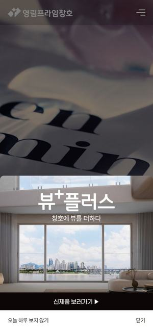
지디웹 WINNER PRIZE · 202630와 포인트창틀 너머 하늘 영상 위로 ‘SEE MORE THROUGH A FRAME’ 문구가 지나가며 장면이 바뀝니다. 메뉴에 시공 사례·카탈로그·견적 문의·상담이 바로 있습니다.
더원파트너스라면자재 회사도 감성 연출이 된다는 예. 자재 상세에서 시공 사례와 견적 문의로 바로 넘어가는 흐름.
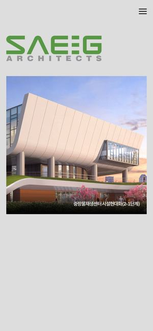
지디웹 WINNER PRIZE · 202531와 포인트완공 건물 사진이 서서히 드러나고, 검은 화면에 ‘Sustainable Architecture & Environmental Engineering Group’의 머리글자가 차례로 쌓여 회사 이름이 됩니다.
더원파트너스라면‘설계·시공·자재’의 머리글자가 차례로 모여 BUILDGO가 되는 이름 연출. 이름 뜻을 첫 화면에서 설명합니다.
Belgrade Arbor처럼 도면 선이 시공된 건물로 바뀌는 첫 화면, Pinnacl의 ‘선으로 그린 기술 회사’ 톤, Samara처럼 사양을 고르면 예상 견적, Material Bank 같은 회원전용 자재몰. 메인인 ‘설계부터 시공까지’를 첫 3초에 보여주고 견적과 자재 구매가 한 흐름으로 이어집니다. 보내주신 파랑+주황을 그대로 살릴 수 있어 이 안을 권합니다.
보내주신 구조(검색창 → 시공 분야 → 전문가 카드 → 무료 견적)는 그대로 두고, Haven처럼 큰 BUILDGO 글자, Block Renovation의 질문형 매칭, Zia Tile처럼 ‘정가 → 내 가격’, 스타벅스 리워드식 등급 안내를 더합니다. 가장 빨리 열 수 있는 안입니다.
Marvell처럼 시공 사진이 떠다니는 첫 화면, 소이정 3D LAB처럼 자재를 돌려 보는 상세, Norrlands trä처럼 수량을 넣으면 내 단가, Fireclay처럼 등급마다 서비스까지 다르게. 자재 판매를 먼저 키우고 싶을 때의 안입니다.
어느 안으로 가든 아래 네 가지가 정해지면 시안이 실제 사이트에 가까워집니다.
추천 조합 중 하나를 고르시면, 보내주신 이름과 색으로 첫 화면 시안(PC·폰)을 만들어 같은 주소로 보내드립니다. 시공 분야 이름·회원 등급·포인트 규칙이 정해지면 그 내용까지 넣습니다.